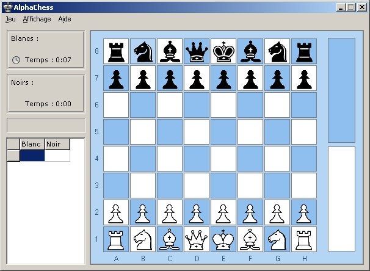
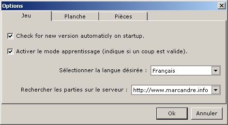
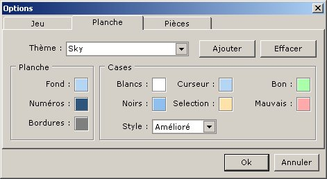
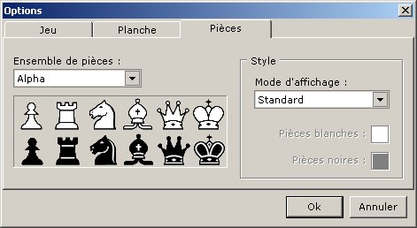
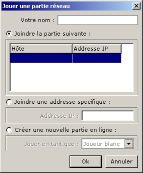

AlphaChess 3
Pour plus d'information visitez mon site web http://www.marcandre.info
ou écrivez-moi à marc@marcandre.info
Copyright ©2003-2005 Marc-andré Lamothe.
Click here for the english version
1. Introduction
1.1 Description
-
AlphaChess est un superbe jeu d'échec vous permettant de jouer en mode local (deux joueurs sur le même ordinateur) ou de jouer en ligne contre l'adversaire de votre choix.
AlphaChess possède une planche de jeu unique personalisable, vous pouvez modifier toutes les couleurs des éléments qui la composent, 10 thèmes de couleurs sont inclus dans le jeu et vous pouvez facilement sauvegarder ou modifier vos propres thèmes. Vous pouvez aussi choisir parmis 20 ensembles de pièces.
1.2 Historique
-
Ce programme à débuter par un projet scolaire en Java et il dépassait largement le cadre et les exigeances du cours lorsqu'il fût terminé. Mais il n'étais pas complet et ce n'est qu'en été 2003 que commença les travaux pour en faire un vrai jeu d'échec. Pour cela le code à été traduit du language java au language pascal et en Juillet 2003 la première version fût terminée.
Ensuite les travaux commencères pour ajouter le mode de jeu en ligne et à peine quelques semaine plus tard la version 2 étais terminé mais même après plusieurs modifications à la version 2, le jeu en réseau étais toujours très instable. Plus d'un ans après les derniére modifications sur la version 2 commencèrent les travaux sur la version 3, dans laquelle tout le code du jeu en réseau fût réécris et isolé du reste du programme. Finnalement, en décembre 2004, la version 3 fût terminée, ajoutant aussi de nombreuses nouvelles fonctionnalité en plus de la stabilité du jeu en ligne.
2. AlphaChess
-
AlphaChess est l'un des plus beau jeu d'échec en ligne qui soit, son interface graphique simple et intuitive fait en sorte qu'il est d'une simplicité remarquable d'y jouer.
2.1 Interfaces
2.1.1 Planche de jeu
-
Voici la planche de jeu ainsi que la fenètre principale :

Pour jouer vous n'avez qu'à cliquer sur le menu Jeu puis sur "Jouer une partie locale" ou sur "Jouer une partie réseau". Sur le coté gauche de la fenêtre est situé les informations sur la partie tel que le nom des joueurs, le temps écoulé depuis le début de la partie, la zone de notification (indiquant le résultat d'un coup) ansi que l'historique des coups jouées.
Pour déplacer une pièce vous n'avez qu'à cliquez desssus (la couleur de la case change pour indiqué la sélection) puis cliquez sur la case où vous souhaitez la déplacée. Il est aussi possible de déplacer les pièces par un glisser-déplacer, en maintenant le bouton de la souris enfoncé et en le relachant sur la case de destination.
Les cases de la planche de jeu changent de couleurs lorsque le curseur de votre souris passe au dessus, ainsi que lorsqu'une pièce est sélectioné. Pendant le déplacement d'une pièce la couleur de la case vous indique si ce déplacement est possible, lorsque le "Mode apprentissage" est activé dans les options. Il est aussi possible de choisir la couleur des cases à chaque moment dans les options.
Pendant la partie il est possible de reprendre un coup en cliquant sur le menu Jeu et sur "Annuler le dernier coup", vous pouvez aussi interrompre (pause) ou abandonner la partie dans ce menu. Il est possible d'inverser la planche de jeu en cliquant sur le menu Affichage puis sur "Inverser la planche de jeu", ce qui inverse la position des joueurs, vous pouvez aussi utilisé la fenêtre de conversation pour communiquer avec votre adversaire, l'historique des parties jouée et les options sont aussi disponibles dans ce menu.
2.1.2 Options
-
Voici les options de AlphaChess :

Dans la section Jeu il est possible d'activer la recherche automatique de mises à jour lors de l'ouverture du jeu, ainsi que le mode apprentisage qui vous afficheras par la couleur de la case sur laquelle vous souhaitez déplacer une pièce si ce déplacement est permis ou non.
Vous pouvez aussi choisir en quelle langue vous souhaitez que le jeu soit affiché. Présentement le jeu n'est disponible qu'en anglais et français, mais d'autres langues pourrait s'ajouter à cette liste bientôt.
Il est aussi possible de choisir le serveur de parties que vous désirer utiliser. Il n'y en a qu'un de disponible pour l'instant et donc cette option devrait toujours indiquer http://www.marcandre.info. Si lorsque vous désirez joindre une partie en ligne un message vous indique qu'il est impossible de joindre le serveur de partie, vérifiez si cette option indique le bon serveur.

Dans la section Planche vous pouvez modifié les couleurs de la planche de jeu ainsi que celles des cases pour chacun de leurs états. Vous pouvez aussi choisir quelle style de case vous désirez avoir, le style Classic afficheras toutes les cases une à coté de l'autre (sans espace ni bordure), alors que le style Amélioré sépareras toutes les cases d'un espace et afficheras une bordure pour chacune (l'image plus haut montre le style Amélioré).
Grâces au thèmes vous pouvez facilement changer toutes les couleurs de le planche de jeu en même temps lorsque vous choissez un thème dans la liste. Pour ajouter un thème, écrivez le nom souhaité et cliquer sur Ajouter, si un thème avec ce nom existe déja, un message vous demanderas si vous souhaitez le remplacer par le nouveau. Pour supprimer un thème de la liste, selectionnez le puis cliquez sur Effacer.

Dans la section Pièces vous pouvez choisir l'ensemble de pièces que vous souhaitez utilisé, 20 ensembles sont inclus avec le jeu. Depuis la version 3.0.6, vous ne pouvez plus ajoutez vos propres ensembles de pièces mais vous pouvez désormais changer la couleur de celles-ci. Le Mode d'affichage Standard afficheras les pièces avec leurs couleur pars défaut (noir & blanc) tandis que le mode Coloré vous permetras de choisir la couleur des pièces pour chaque joueur.
Notez que le mode Coloré afficheras toujours les pièces avec un cadre noir et que seul la couleur de fond seras changée, il est donc déconseillé de mettre des couleurs foncées ou de mettre la même couleur pour les deux joueurs.
2.2 Multi-joueur
-
AlphaChess est un jeu d'échecs complètement multi-joueur, c'est à dire que vous pouvez seulement jouer contre un autre joueur, soit sur le même ordinateur ou sur deux ordinateurs connecté en réseau ou sur internet.
2.2.1 Partie locale
-
Pour jouer une partie locale (deux joueurs sur le même ordinateur), il suffit de cliquer sur "Jouer une partie locale" dans le menu Jeu, puis d'entrer le noms des deux joueurs et de cliquer sur Ok dans la fenêtre ci-dessous, la partie commenceras immédiatement.

2.2.2 Partie réseau
-
Pour jouer une partie réseau (avec un joueur sur un autre ordinateur) il suffit de cliquer sur "Jouer une partie réseau" dans le menu Jeu, après avoir entré votre nom vous devez spécifier si vous souhaitez joindre une partie qui figure dans la liste de parties, joindre une partie à une adresse spécifique ou créer une nouvelle partie.
Si vous choissez de joindre une partie dans la liste, vous n'avez qu'a sélectionnée la partie désirée et à cliquer sur Ok. Si la liste est vide c'est qu'aucune partie n'est disponible sur internet. Si un message d'erreur indiquant qu'il est impossible d'accéder à la liste sur le serveur de parties s'affiche lorsque vous choisissez de faire une partie réseau c'est que le serveur de parties est innacessible ou alors que le mauvais serveur est sélectionner dans les options.
Si vous choissez de joindre une partie à une adresse spécifique, vous devez alors tapper l'addresse IP de l'ordinateur sur lequel une partie réseau à été crée.
Si vous choissez de créer une partie, vous devez alors choisir avec quelle couleur vous souhaitez jouer. Le joueur blanc est toujours celui qui joue le premier. Pour pouvoir créer une partie réseau il faut que votre ordinateur ai un accès direct à internet, si votre accès à internet est partagé entre plusieurs ordinateur grâce à un router cela ne seras pas possible à moins de configurer votre router pour rediriger les données qu'il recoit sur le port 2570 vers votre ordinateur, pour cela il faudra par contre que vore ordinateur ai une addresse ip fixe. Pous plus d'information veuillez contacter votre technicien.
3. Conclusion
-
AlphaChess est le jeu d'échec par excellence pour vous divertir avec vos amis de n'importe où dans le monde que vous soyez expert ou novice. Pour toute autre information, question ou commentaire, vous pouvez m'écrire à l'addresse suivante : marc@marcandre.info.
Merci d'utiliser AlphaChess.